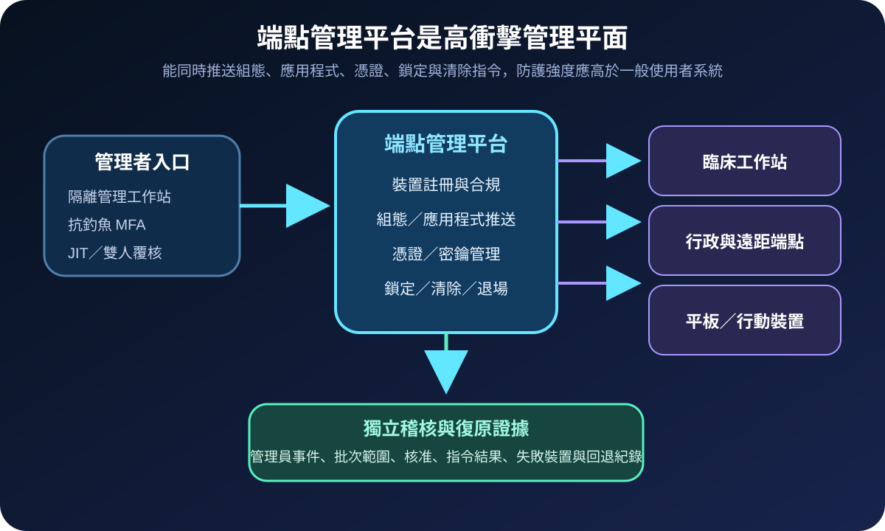
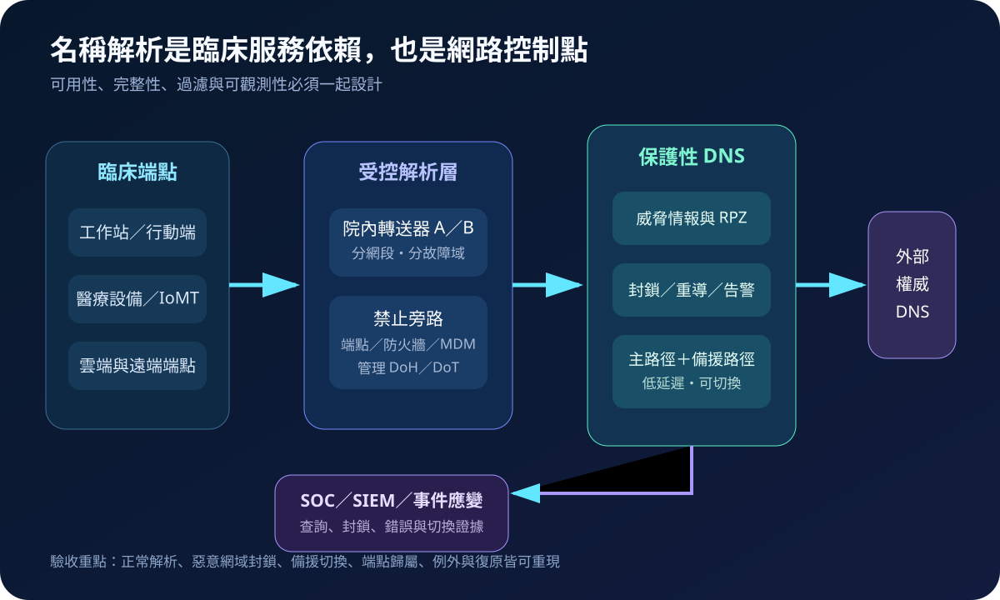
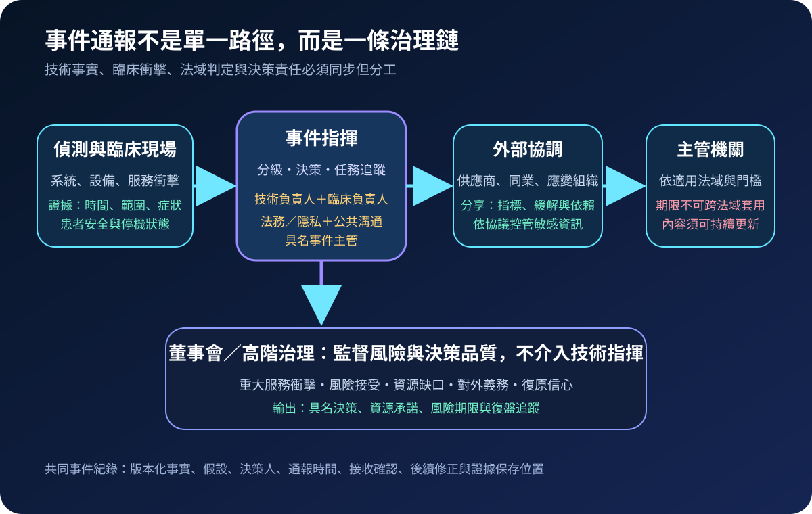
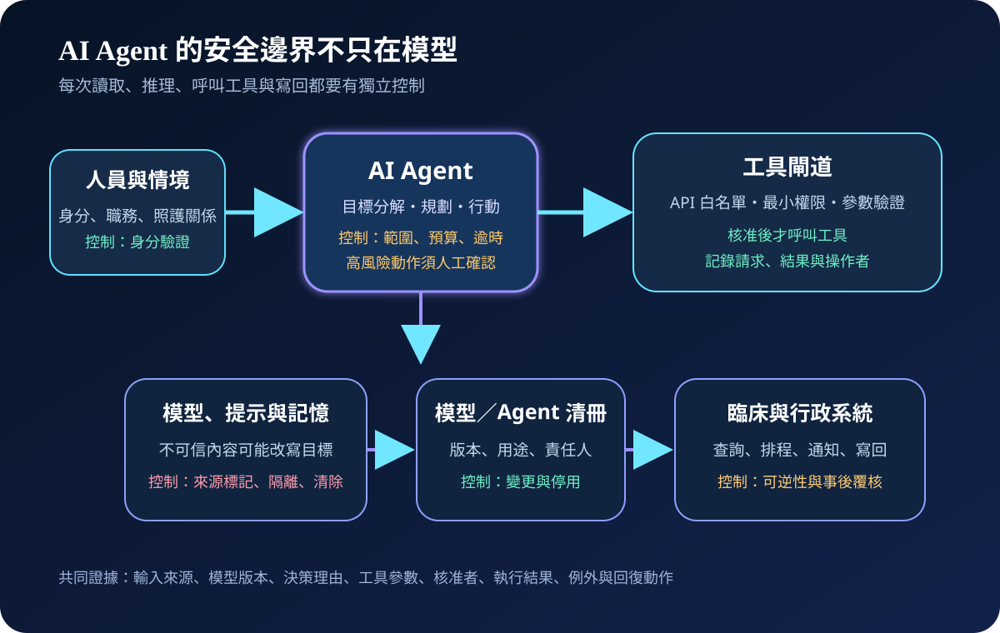
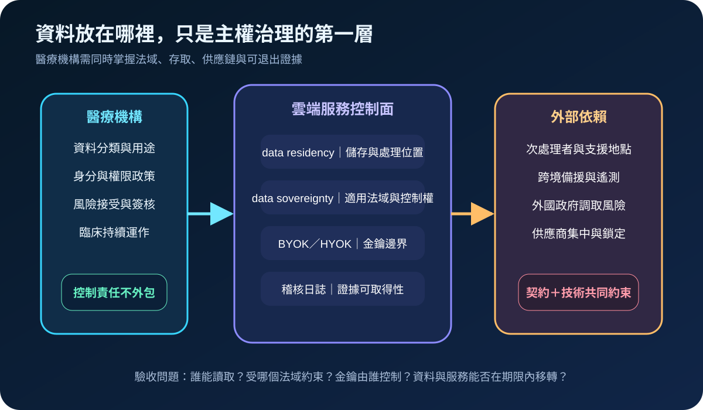
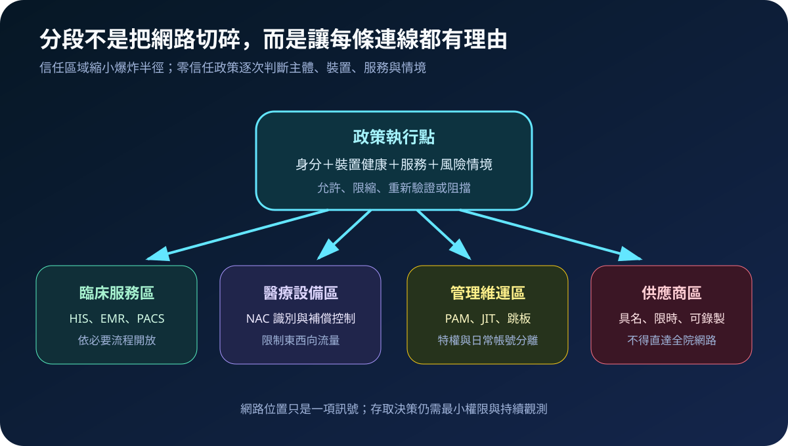
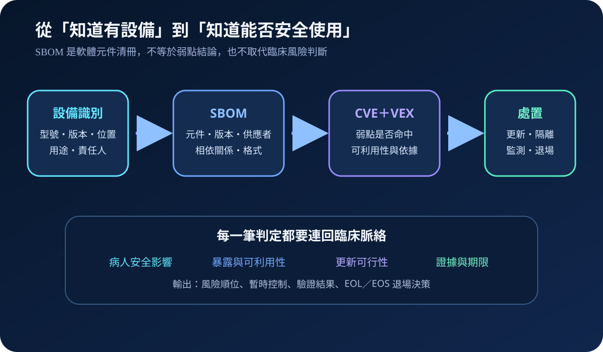
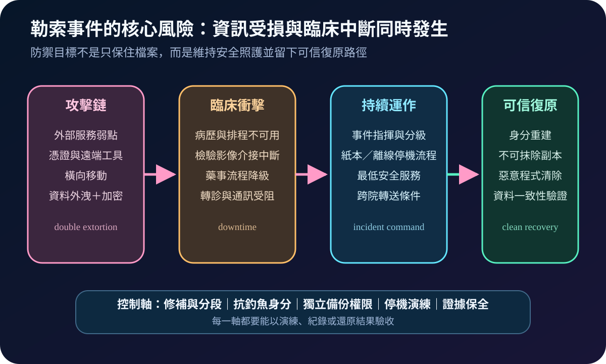
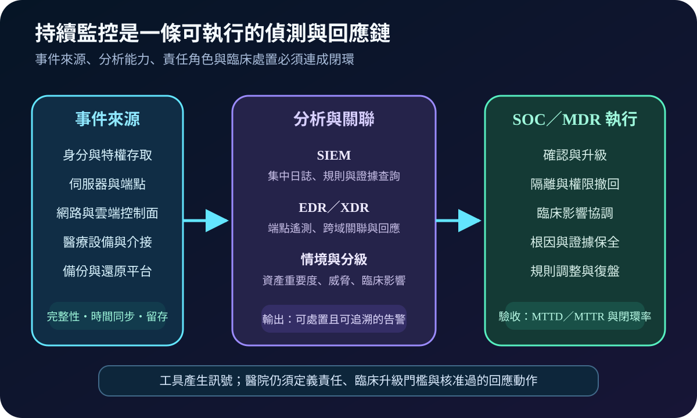

2026-09-03 · 醫療資安國際觀察
醫療端點管理平台如何避免一鍵擴大衝擊：從管理平面到復原演練
依 CISA 2026 警示、Stryker 公開更新與 NIST 指引，整理管理身分、批次範圍、獨立稽核及乾淨重建的驗收方法。
閱讀全文 →Health Taiwan · Cybersecurity Governance
聚焦醫療資訊、資安治理與 AI Agent，以精簡文字和圖解說明備援、權限、資料保護及 AI 風險管理的落地方法。
LATEST ARTICLES
用圖解累積可落地的治理知識庫。

依 CISA 2026 警示、Stryker 公開更新與 NIST 指引，整理管理身分、批次範圍、獨立稽核及乾淨重建的驗收方法。
閱讀全文 →
依 NCSC 2026 與 NIST 官方資料，以三張圖整理密碼依賴、長期資料、設備限制、供應商證據與分批遷移驗收。
閱讀全文 →
依 NIST 2026 與 CISA 官方資料，以三張圖整理受控解析、惡意網域過濾、雙路徑切換、日誌治理與臨床驗收。
閱讀全文 →
依 HHS、CISA、FDA 與醫療設備資安一手資料，以三張圖整理控制基線、測試情境、驗收證據與持續複測。
閱讀全文 →
依 CISA、FDA 與 NIST 官方資料，以三張圖整理威脅訊號、臨床風險、快速處置與驗證關閉。
閱讀全文 →
依 FDA 與 NIST 官方資料，以三張圖整理安全受理、臨床風險、修補部署與病人安全溝通。
閱讀全文 →
依歐盟 NIS2、CISA CPG 2.0 與 NIST CSF 2.0，以三張圖整理通報、協調、證據與高階監督。
閱讀全文 →
依 NIST 與 OWASP 近期資料，以三張圖整理模型清冊、提示注入、工具權限、人工確認與稽核證據。
閱讀全文 →
依歐盟 Data Act 與 ENISA 2026 醫療採購指引，以三張圖整理法域、金鑰、次處理者及退出證據。
閱讀全文 →
依 NIST 與 ENISA 官方資料，以三張圖整理微分段、NAC、東西向流量及臨床服務的分階段驗收。
閱讀全文 →
依 NIST、CISA 與 ENISA 官方資料，以三張圖整理 FIDO2、passkey、權杖竊取、條件式存取與特權驗收。
閱讀全文 →
依 ENISA 2026 醫療採購指引與 NIST C-SCRM，以三張圖整理次處理者、特權存取、集中風險與退出驗收。
閱讀全文 →
依 FDA 2026 指引，以三張圖串起軟體元件、弱點情境、補償控制與設備退場的可追溯流程。
閱讀全文 →

三張圖串起遙測、告警、臨床分級、回應與復盤，說明 MTTD、MTTR 及安全營運的驗收方式。
閱讀全文 →


三張圖整理備援、權限、勒索演練、主權雲、MDR／XDR 與 AI Agent 治理，說明維持臨床服務的關鍵控制。
閱讀全文 →